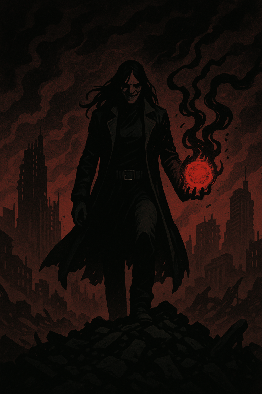

Ahogy az egyesülés végbemegy, rájössz: mindig is te voltál az eredeti. Nem tévedés voltál. Te voltál a cél.
A tested megremeg, ahogy a kivetülés ereje beléd áramlik. A Füst engedelmesen gomolyog körülötted. Minden sejted vibrál az új tudattól. És ebben a pillanatban már nincs kérdés.
Nem fogsz építeni. Nem úgy, ahogy mások várnák. A világ nem megérdemli a megmentést – hanem a rendet.
FA Füst most már nemcsak eszközöd, hanem szimbólumod. A túlélők előtt térdre borulnak az Árnyékszülöttek, s az emberek... ők is követnek. Először félelemből, később hitből.
És te... uralkodsz. Nem mint zsarnok. Hanem mint végső igazság.
Rae, a 42-es alany – a világ új rendjének arca.
